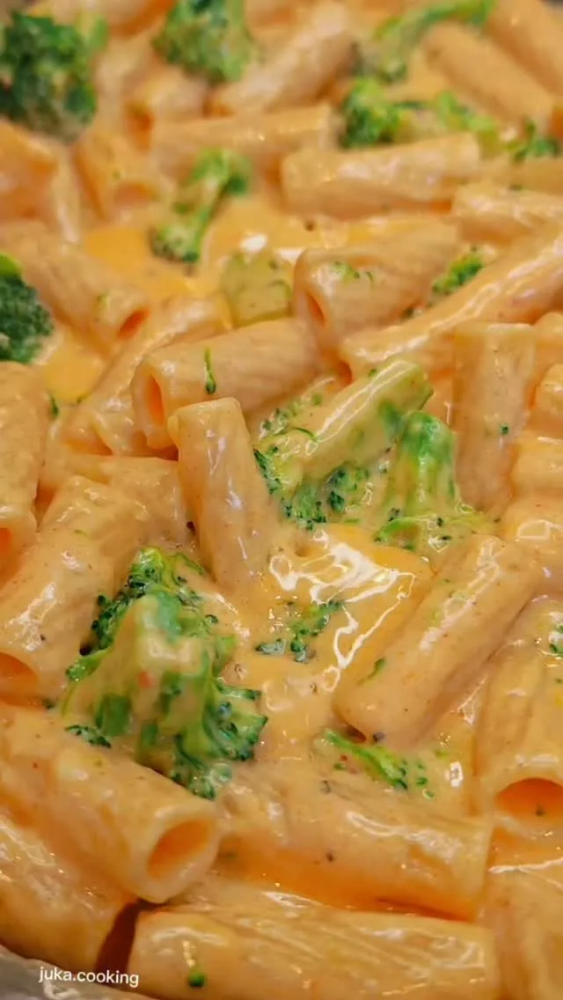

Cremige Käse-Sahne-Pasta mit Brokkoli
Du liebst schnelle, cremige Pasta? Dann ist dieses Rezept genau das Richtige! In nur 15 Minuten zauberst du eine unglaublich käsige Brokkoli-Pasta, die perfekt für den Feierabend ist.
- 3–4 Portionen
- ca. 15 Min.
- 12 Zutaten
- 8 Schritte
Zur Zubereitung Video ansehen ↗
Zutaten
Zubereitung
- Nudeln in Salzwasser ca. 10 Minuten kochen.
- In den letzten 3 Minuten den Brokkoli zu den Nudeln geben und mitgaren.
- Währenddessen die Butter in einer Pfanne schmelzen und das Mehl einrühren.
- Knoblauch fein hacken und zusammen mit Milch und Sahne in die Pfanne geben. Gut verrühren.
- Mit Pfeffer, Paprikapulver und Salz würzen.
- Geriebenen Käse und Cheddar hinzufügen und unter Rühren schmelzen lassen, bis eine cremige Sauce entsteht.
- Nudeln und Brokkoli abgießen und direkt in die Käsesauce geben.
- Alles gut vermengen und sofort servieren.
Tipp: Mit etwas frisch gemahlenem Pfeffer oder extra Käse servieren – so wird's noch leckerer!